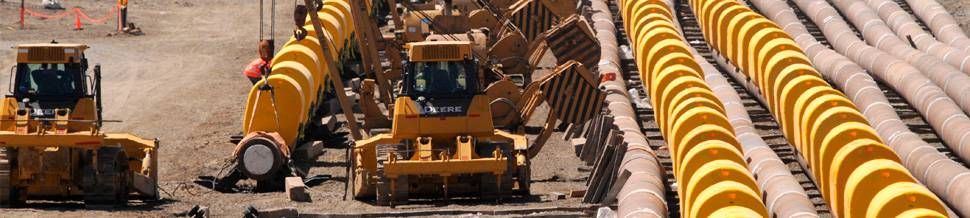

- 
Nuestra Organización : Esfuerzo y compromiso .
Esos fueron los cimientos sobre los que los hermanos Contreras fundaron esta empresa en 1947,
que en toda su existencia nunca dejó de crecer y modernizarse.
Con una vision integral del negocio y con las mejores prácticas de la industria
y estándares internacionales, hace realidad importantes proyectos para el desarrollo
energético de la región, vinculados a la producción, transporte y proceso de hidrocarburos,
energía, minería e infraestructura.
CONTRERAS ha formado equipos de trabajo altamente especializados que le permiten concebir,
planificar y ejecutar grandes proyectos en todas sus etapas hasta su puesta en marcha.